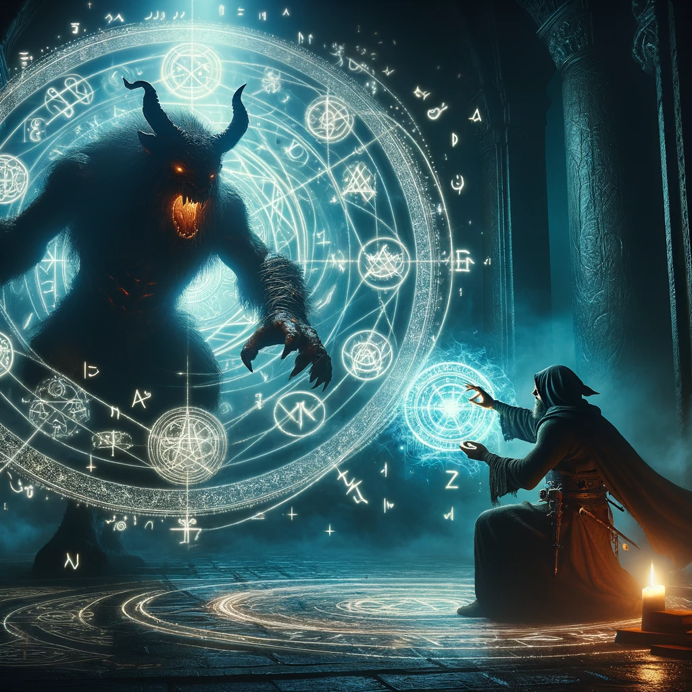
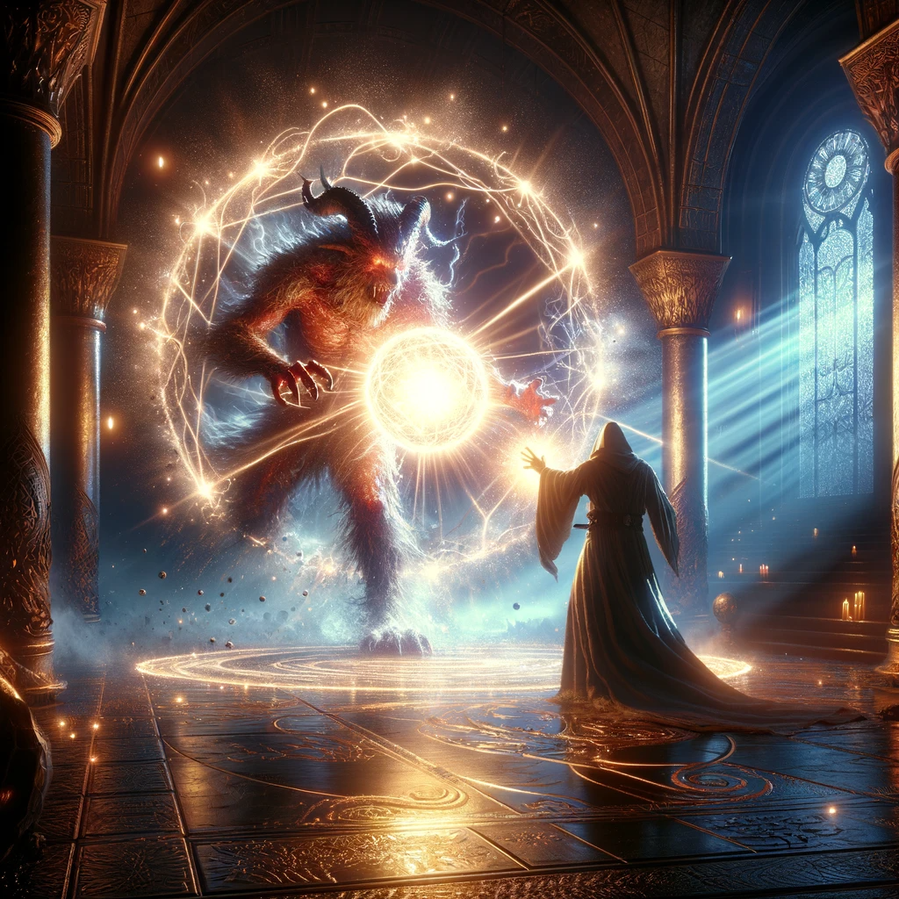

Confronting the Ethereal
The Beast of Shadows, a creature of pure darkness, defies physical form. As it shifts and moves like smoke, you realize that this battle will be one of cunning and arcane insight.
You begin an intricate incantation, drawing ancient runes of light in the air. The Beast recoils from your luminous magic, its form flickering under the intensity of your spells.
Sensing its vulnerability to light, you focus your energy and summon a radiant orb, a sun-like sphere that bathes the chamber in brilliance. The Beast's form begins to unravel, its shadows dissipating under the glare of your spell.
With a final word of power, you banish the Beast back to the darkness from whence it came, its form dissolving completely in the wake of your overwhelming magic.